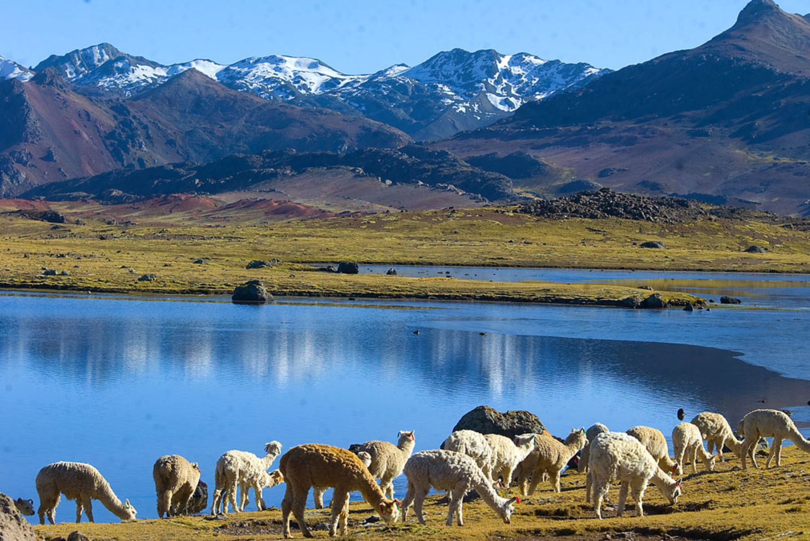
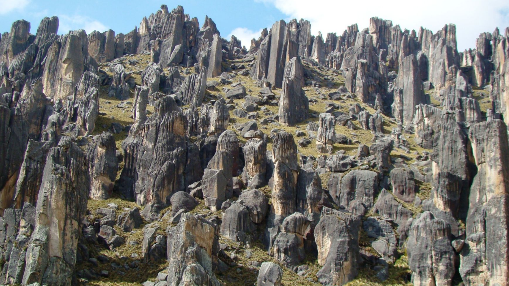
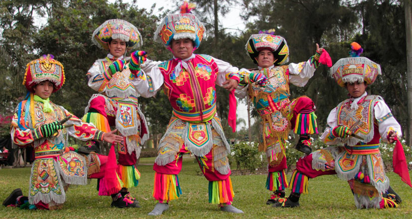

Historic City Center

Walk through the city center to explore the main plaza, local craft stands, and community life. It's a great way to understand the region’s identity.
A highland region in Peru known for Andean culture, stunning landscapes, and living traditions.
Walk through the city center to explore the main plaza, local craft stands, and community life. It's a great way to understand the region’s identity.

Highland lagoons offer calm waters and dramatic mountain views. Many routes are ideal for hiking and eco-tourism.

The Andes around Huancavelica are known for scenic trails and viewpoints. Bring a jacket and take breaks to adapt to altitude.

Festivals are a living expression of local culture. They bring families together through dance, music, and traditional clothing.